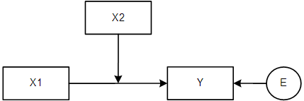
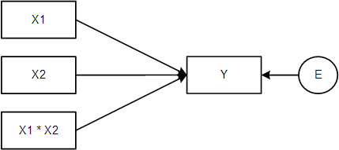

Lab 1: Introduction
Interaction
In this assignment we work with the PublicParticipation.sav data. It contains (fictional) data on the following variables: income (higher scores, more income), public participation, education, age, and gender (0 = females; 1 = males). Public participation involves being member of school boards, municipal councillor, etc.
In this assignment we will see how we can model interaction between a continuous predictor and a dichotomous predictor.
Suppose we are interested in relationship between age and public participation, and we want to know if the relationship is moderated by gender. An interaction model is conceptually represented as follows (these two diagrams are interchangeable):


Modeling Interactions
The regression model for testing the interaction is:
\(Y' = b_{0} + b_{1}X + b_{2}D_{g} + b_{3}XD_{g}\)
where X = age, and D_g = gender (0 = women; 1 = men). Notice that women are our reference group.
To model interaction we need to create a new variable, which is the product of the dummy variable (gender in our case) and (age in our case).
This is best done via syntax, but to use the graphical interface proceed as follows:
via Transform > compute variable
Give the new variable a name (i.e., the target variable), say GenderTAge.
Then specify the product at the right (see more information button). Click on Paste, select and run the code. Check in Data View whether the product term was added correctly.
Alternatively, the syntax is:
COMPUTE GenderTAge = Gender * Age.
EXECUTE.Now run the regression analysis that includes the interaction effect.
Important: Just like with dummies you must include all dummies that belong to the same variable in the model together, with an interaction term, you must always include its constituent variables as well. This is because the interaction term only modifies the effect of its constituent variables; the effect of those constituent variables must thus also be in the model.
So, if you add variable intXTZ into the model, you must also include X and Z.
Via analyze > regression > linear; choose age, gender and GenderTAge as the independent variables, and public participation as the dependent variable.
Consult the table Regression coefficients. Write down the general estimated model.
Finish the following equation, then check your answer.
\(\text{Public Participation' = .....}\)
\(\text{Public Participation}′ = 3.252 + 0.137*\text{Age} + 12.439*\text{Gender} − 0.116*\text{Gender}*\text{Age}\)
Now write down the estimated models down for women and men separately. Hint: fill in 0 and 1 in the general estimated model mentioned in the previous step, then simplify the formula.
Complete the equations for women (W) and men (M):
\(\text{PP}_W'=\) \(+\) \(*\text{Age}\)
\(\text{PP}_M'=\) \(+\) \(*\text{Age}\)
Now draw (on a piece of paper) a graph of the results. That is, put age on the x-axis, the predicted public participation on the y-axis, and draw separate regression lines for males and females.
True or false
In the sample, age has a positive effect on public participation for women but a negative effect for men?
The researchers tested at the 5% level and concluded:
“We have convincing evidence that the population effect of age on public participation is different for men and women.”
The estimated regression model was:
\(Y'= 3.252 + 0.137Age + 12.439D_g - 0.116(Age \times D_g)\)
What would the regression equation look like if we would have used the men as the reference group? Use logic to answer this question, instead of re-running the analysis.
\(Y'=\) \(+\) \(*\text{Age}+\) \(*D_g+\) \(*(\text{Age} \times D_g)\)
To verify our answer to the previous question, we will recode the variable Gender such that males are scored 0 (= reference group) and females are scored 1.
Proceed as follows:
via Transform > Recode into different variables
Select Gender.
Give a name to the new output variable (say GenderFem), give a label (say: “Gender (ref=males)” click on change.
Specify old and new values: old value 0 becomes 1 and old value 1 becomes 0 (don’t forget to click on add in between).
Click OK. Verify that SPSS added a new column with a dummy variable where males are the reference group.
Compute the product variable for the interaction between age and gender but now use the dummy having males as reference group.
Rerun the regression analysis, but now using the new gender variable and interaction term. If you’re answer in the previous step is correct you should find the values back in the table Regression Coefficients.
Categorical Predictors with Three or more Categories
The categorical predictor Education has three levels (low, middle, high). If we want to include such a variable we need to use dummies.
Code the dummy variables as follows:
| Value | D1 | D2 |
|---|---|---|
| Low | 0 | 0 |
| Middle | 1 | 0 |
| High | 0 | 1 |
Which group is the reference group according to this coding?
Use syntax to create the dummies.
We are now ready for the regression analysis.
Run a hierarchical regression analysis with public participation as dependent variable. Model 1 only includes age. Model 2 includes age and the dummies. So we have the following nested models:
This model does not include the interaction effects yet! This means that we assume that the regression lines are parallel to one another. In the next assignment we check whether this assumption is reasonable.
Proceed as follows:
- via analyze > regression > linear.
- Select public participation as the dependent variable and only age as the independent variable. Click on next.
- Now select the two dummies we have created in the previous step. The two dummies together represent education. Always enter dummies into the model together!
- Via Statistics ask for the R-change statistics.
Consult the output and answer the questions in the next few steps.
Education and age together explain % of the total variance.
What is the value of the test statistic that tests the unique effect of education, controlled for age?
Report the results for the unique effect of education, then check your answer.
Education does not have a significant unique effect on public participation after controlling for age, \(\Delta R^2 = .04, F(2,38) = 0.895, p = .417\).
Consult the table with the regression coefficients.
Write down the estimated regression equation of Model 2.
\(PublicParticipation'\:=\:10.478\:+\:.097\:\cdot \:Age\:-\:2.042\:\cdot \:D1\:-\:3.071\:\cdot \:D2\)
Write down the estimated model for each of the three groups.
Then make a graph of the regression equations. Put age on the x-axis, the predicted public participation on the y-axis, and draw the lines for each education group.
The models were:
\(PP'_l = 10.478 + .097Age\)
\(PP'_m = (10.478-2.042) + .097Age = 8.436 + .097Age\)
\(PP'_h = (10.478-3.071) + .097Age = 7.407 + .097Age\)
Did you get it right?
Suppose we have two persons, both are 40 years old, but one had middle level education and the other had high-level education.
What is the expected (absolute) difference in public participation between these two persons?
The researchers conclude:
“Controlled for age, low educated people in the sample show highest level of public participation”.
Is this a valid conclusion?
Interaction with more than Two Categories
In the previous assignment, we assumed that the effect of Age on Public participation was equal for each of the education level groups. However, we do not know whether this assumption is reasonable. In this assignment, we will check whether the interaction effect between Age and Education level is statistically significant or not.
Create the two interaction terms using syntax, with the Compute variable command. Note that we need two interaction terms: D1Tage and D2Tage.
We are now ready for the regression analysis.
Run a hierarchical regression analysis. Model 1 only includes age and the two dummy variables. Model 2 additionally includes the interaction terms.
Write down the formulas for the two nested models, then check your answer.
- Model 1: \(Y'= b_0 + b_1Age + b_2D_1 + b_3 D_2\)
- Model 2: \(Y'= b_0 + b_1Age + b_2D_1 + b_3 D_2 + b_4D_1Age + b_5 D_2Age\)
Proceed as follows (or, preferably, use syntax):
- via analyze > regression > linear.
- Select public participation as the dependent and age, D1 and D2 as the independent variables. Click on next.
- Now select the two interaction terms we have created in the previous step. The two interaction terms together represent the interaction effect between education and age.
- Via Statistics ask for the R-change statistics.
Consult the output and answer the questions in the next few steps.
Before we carry out any of the significance tests, let’s take a look at the coefficients table. Look at the unstandardized coefficients in Model2. First, write down the entire estimated model.
Complete the following equation:
\(Y'=\) \(+\) \(*Age+\) \(*D_{middle}+\) \(*D_{high}+\) \(*(D_{middle}*Age)+\) \(*(D_{high}*Age)\)
LaTeX: 𝑃𝑢𝑏𝑙𝑖𝑐 𝑃𝑎𝑟𝑡𝑖𝑐𝑖𝑝𝑎𝑡𝑖𝑜𝑛^′= .073 ∗𝐴𝑔𝑒−5.190 ∗ 𝐷1+1.577 ∗𝐷2+.067 ∗𝐷1𝑇𝐴𝑔𝑒 − .088 ∗𝐷2𝑇𝐴𝑔𝑒 𝑃 𝑢 𝑏 𝑙 𝑖 𝑐 𝑃 𝑎 𝑟 𝑡 𝑖 𝑐 𝑖 𝑝 𝑎 𝑡 𝑖 𝑜 𝑛 ′ = .073 ∗ 𝐴 𝑔 𝑒 − 5.190 ∗ 𝐷 1 + 1.577 ∗ 𝐷 2 + .067 ∗ 𝐷 1 𝑇 𝐴 𝑔 𝑒 − .088 ∗ 𝐷 2 𝑇 𝐴 𝑔 𝑒
Move To…This element is a more accessible alternative to drag & drop reordering. Press Enter or Space to move this question. UnansweredQuestion1 ptsEdit this question Delete this question Next, write down the estimated model for each of the three education groups.
So finish the following equations:
LaTeX: PubPart’low= …. � � � � � � � ′ � � � = . . . .
LaTeX: PubPart’middle= …. � � � � � � � ′ � � � � � � = . . . .
LaTeX: PubPart’high= …. � � � � � � � ′ ℎ � � ℎ = . . . .
(Remember, to get to the three models, we have to fill in 0 and 1 for the dummy variables.)
General answer comments LaTeX: 𝑃𝑢𝑏𝑙𝑖𝑐𝑃𝑎𝑟𝑡^′ 𝑙𝑜𝑤= 11.426 + .073 ∗𝐴𝑔𝑒 𝑃 𝑢 𝑏 𝑙 𝑖 𝑐 𝑃 𝑎 𝑟 𝑡 ′ 𝑙 𝑜 𝑤 = 11.426 + .073 ∗ 𝐴 𝑔 𝑒
LaTeX: 𝑃𝑢𝑏𝑙𝑖𝑐𝑃𝑎𝑟𝑡^′ 𝑚𝑖𝑑𝑑𝑙𝑒= 6.236 + .14 ∗𝐴𝑔𝑒 𝑃 𝑢 𝑏 𝑙 𝑖 𝑐 𝑃 𝑎 𝑟 𝑡 ′ 𝑚 𝑖 𝑑 𝑑 𝑙 𝑒 = 6.236 + .14 ∗ 𝐴 𝑔 𝑒
LaTeX: 𝑃𝑢𝑏𝑙𝑖𝑐𝑃𝑎𝑟𝑡^′ ℎ𝑖𝑔ℎ= 13.003 - .015 ∗𝐴𝑔𝑒 𝑃 𝑢 𝑏 𝑙 𝑖 𝑐 𝑃 𝑎 𝑟 𝑡 ′ ℎ 𝑖 𝑔 ℎ = 13.003 − .015 ∗ 𝐴 𝑔 𝑒
Move To…This element is a more accessible alternative to drag & drop reordering. Press Enter or Space to move this question. Question1 ptsEdit this question Delete this question The correct answer was:
LaTeX: 𝑃𝑢𝑏𝑙𝑖𝑐𝑃𝑎𝑟𝑡^′ 𝑙𝑜𝑤= 11.426 + .073 ∗𝐴𝑔𝑒 𝑃 𝑢 𝑏 𝑙 𝑖 𝑐 𝑃 𝑎 𝑟 𝑡 ′ 𝑙 𝑜 𝑤 = 11.426 + .073 ∗ 𝐴 𝑔 𝑒
LaTeX: 𝑃𝑢𝑏𝑙𝑖𝑐𝑃𝑎𝑟𝑡^′ 𝑚𝑖𝑑𝑑𝑙𝑒= 6.236 + .14 ∗𝐴𝑔𝑒 𝑃 𝑢 𝑏 𝑙 𝑖 𝑐 𝑃 𝑎 𝑟 𝑡 ′ 𝑚 𝑖 𝑑 𝑑 𝑙 𝑒 = 6.236 + .14 ∗ 𝐴 𝑔 𝑒
LaTeX: 𝑃𝑢𝑏𝑙𝑖𝑐𝑃𝑎𝑟𝑡^′ ℎ𝑖𝑔ℎ= 13.003 - .015 ∗𝐴𝑔𝑒 𝑃 𝑢 𝑏 𝑙 𝑖 𝑐 𝑃 𝑎 𝑟 𝑡 ′ ℎ 𝑖 𝑔 ℎ = 13.003 − .015 ∗ 𝐴 𝑔 𝑒
Now, answer the following questions.
True or False?
The effect of Age on Publication Participation in the sample is positive for all education groups.
True This answer is incorrect. Have another look at the regression coefficients. Correct answer False Indeed!
Move To…This element is a more accessible alternative to drag & drop reordering. Press Enter or Space to move this question. Question1 ptsEdit this question Delete this question For which group is the effect of Age on publication participation the strongest? Low education Correct answer Middle education Correct! High education Wrong answer comments This answer is incorrect. Note that the strength of the effect is about the absolute values of the regression coefficients.
Move To…This element is a more accessible alternative to drag & drop reordering. Press Enter or Space to move this question. Question1 ptsEdit this question Delete this question What is the effect of Age on Publication for the low education group? Round your number to three decimal points. Correct Answers 0.073 (with margin: 0) Indeed! Wrong answer comments This answer is incorrect. Remember that low education was the reference group of Education.
Move To…This element is a more accessible alternative to drag & drop reordering. Press Enter or Space to move this question. UnansweredQuestion1 ptsEdit this question Delete this question We inspected the estimated model. But is there a significant interaction effect to begin with? To answer that question we inspect the Model Summary Table.
First of all, write down the LaTeX: R^2 � 2 for the small model and the large model. What do these numbers mean?
General answer comments Small model: .097 Large model: .127 These numbers refer to the variance that is explained by each model.
Move To…This element is a more accessible alternative to drag & drop reordering. Press Enter or Space to move this question. Question1 ptsEdit this question Delete this question Finish the following sentence:
Model 2 with the interaction effects explains an additional ___% of the variance in Public Participation compared to Model 1.
(i.e., on top of what was already explained by the main effects of Age and Education)
Correct Answers 3 (with margin: 0) Correct! Wrong answer comments This answer is incorrect. Compare the two values of LaTeX: R^{2} � 2
Move To…This element is a more accessible alternative to drag & drop reordering. Press Enter or Space to move this question. UnansweredQuestion1 ptsEdit this question Delete this question We will now carry out the F-change test. Write down the null hypothesis and alternative hypothesis that we test with this F-change test. General answer comments LaTeX: H_0: � 0 : LaTeX: :R^2:=:0 � 2 = 0
LaTeX: H_1 � 1 : LaTeX: :R^2::0 � 2 ≠ 0
Move To…This element is a more accessible alternative to drag & drop reordering. Press Enter or Space to move this question. UnansweredQuestion1 ptsEdit this question Delete this question Write down the F-value, the df and the p-value. General answer comments F-value: .618 df: (2, 36) p-value: .545
Move To…This element is a more accessible alternative to drag & drop reordering. Press Enter or Space to move this question. Question1 ptsEdit this question Delete this question Is there a significant interaction effect? Use a significance level of 5%. Yes This answer is incorrect. Note that the interaction effect is the only thing that has been added in Model 2, so you can use the F-change test to examine if the interaction effect is significant. Correct answer No Indeed!
Move To…This element is a more accessible alternative to drag & drop reordering. Press Enter or Space to move this question. QuestionEdit this question Delete this question With the F-change test, we tested whether there was a significant interaction effect. Did you find the following answers?
LaTeX: H0: ^2change=0 � 0 : � 2 � ℎ � � � � = 0
LaTeX: H1: ^2change>0 � 1 : � 2 � ℎ � � � � > 0
LaTeX: F(2,36) = 0.618, p = .545 � ( 2 , 36 ) = 0.618 , � = .545
We decide to retain the null hypothesis, because p is larger than LaTeX: � = .05. This means that we did not find sufficient evidence to believe that there is an interaction effect in the population (i.e., adding the interaction terms to the model does not lead to a significant increase of explained variance).
Move To…This element is a more accessible alternative to drag & drop reordering. Press Enter or Space to move this question. Question1 ptsEdit this question Delete this question True or False?
“The next thing we need to do is carry out simple effects analysis!”
True This answer is incorrect. Note that we only need to carry out simple effects analysis if the interaction is significant. Correct answer False Indeed!
Move To…This element is a more accessible alternative to drag & drop reordering. Press Enter or Space to move this question. UnansweredQuestion1 ptsEdit this question Delete this question This statement is false. There is no significant interaction effect, so there is no need for simple effects analysis. We only proceed with simple effects analysis if there is a significant interaction effect.
The best thing to do now is to interpret the model without the interaction effect. This is the smaller Model1.
What can we conclude about the effect of Age and Education level if we interpret Model 1?
General answer comments Age and Education level jointly explain 9.7% of the total variance in Public Participation. However, not any effect of the predictors is significant (using α=.05).
For more elaborate information, see the pdf document with the solutions.
Interaction Effects
this last assignment, you will examine whether the effect of relationship with coworkers (sccowork; higher score = better relationship) on the emotional pressure at work (scemoti) has an interation effect with gender (0 = male, 1 = female).
If there is an interaction effect, the effect of sccowork on scemoti depends on the value of the variable gender.
Open Work.sav Download Work.sav, and click on “Next” to start the assignment.
Move To…This element is a more accessible alternative to drag & drop reordering. Press Enter or Space to move this question. QuestionEdit this question Delete this question To be able to examine the interaction effect, you should first create a product variable.
- Go to Transform > Compute Variable
- Give a name to the new product variable in Target Variable (GenderTRelco for example).
- In Nummeric Expression you need to specify how the new variable should be computed. You have to enter gender * sccowork to compute the product of gender and sccowork.
- Paste and run the syntax, and check whether the product variable was added
Move To…This element is a more accessible alternative to drag & drop reordering. Press Enter or Space to move this question. Question1 ptsEdit this question Delete this question Conduct a multiple regression analysis (using Analyze > Regression > Linear) with scemoti as dependent variable. The independent variables are the main effects (gender and sccowork) and the interaction effect (GenderTRelco).
What is the p-value of the interaction effect?
Correct Answers 0.083 (with margin: 0) Indeed! Wrong answer comments This answer is incorrect. Have another look at the SPSS output.
Move To…This element is a more accessible alternative to drag & drop reordering. Press Enter or Space to move this question. Question1 ptsEdit this question Delete this question Is the interaction effect significant (with LaTeX: � = .10)? Correct answer Yes Correct! No This answer is incorrect. Note that we are using an alpha level of 0.10.
Move To…This element is a more accessible alternative to drag & drop reordering. Press Enter or Space to move this question. Question1 ptsEdit this question Delete this question Draw (on paper, not in SPSS) a schematic graph of the interaction effect. Put relationship with coworkers on the X-axis, and emotional pressure on the Y-axis. Draw a schematic regression line for each group.
(Hint: first write out the two separate estimated models)
What is the (unstandardized) effect of relationship with coworkers on emotional pressure in the group of males?
The regression equation for the entire sample is:
LaTeX: ’ = scemoti ′ = LaTeX: b_0 + b_1 + b_2 + b_3* � 0 + � 1 ∗ Gender + � 2 ∗ sccowork + � 3 ∗ GenderTRelco
For males, the value of Gender is 0. That means that GenderTRelco is also 0. The regression equation for males then becomes:
LaTeX: _{male}’ = b_0 + b_2* scemoti � � � � ′ = � 0 + � 2 ∗ sccowork
Correct Answers -0.237 (with margin: 0) Wrong answer comments This answer is incorrect. Have another look at the regression coefficients.
Move To…This element is a more accessible alternative to drag & drop reordering. Press Enter or Space to move this question. Question1 ptsEdit this question Delete this question What is the (unstandardized) effect of relationship with coworkers on emotional pressure in the group of females?
Correct Answers 0.202 (with margin: 0) Correct! Wrong answer comments This is incorrect. Have another look at the regression coefficients.
Move To…This element is a more accessible alternative to drag & drop reordering. Press Enter or Space to move this question. Question1 ptsEdit this question Delete this question In what group is the effect of relationship with coworkers on emotional pressure the strongest: males or females? Correct answer Males Correct! Females This answer is incorrect. Remember that the strength of the effect depends on the absolute value of the effects.
Move To…This element is a more accessible alternative to drag & drop reordering. Press Enter or Space to move this question. Question1 ptsEdit this question Delete this question In practice, you’d often want to know whether the effects within the groups are significant.
Can you use the output of this regression analysis to draw conclusions about the generalizability of the effect within each group?
No Correct answer Yes, but only for the group of males Indeed! Yes, but only for the group of females Yes, for both groups Wrong answer comments This answer is incorrect.
Move To…This element is a more accessible alternative to drag & drop reordering. Press Enter or Space to move this question. Question1 ptsEdit this question Delete this question At this moment, we don’t have enough information in the output yet to test the effect within the female group. But we can test the effect within the male group!
What is the p-value of the effect of sccowork on scemoti within the male group?
Correct Answers 0.237 (with margin: 0) Correct! Wrong answer comments This answer is incorrect. Have another look at the SPSS output.
Move To…This element is a more accessible alternative to drag & drop reordering. Press Enter or Space to move this question. Question1 ptsEdit this question Delete this question To test the significance within the the group of females, we can simply switch the reference groups.
- Make a new dummy variables: D1, (on which males score 1, and females 0)
- Compute a new product variable (D1TRelCo = D1 * sccowork)
Perform a new regression analysis with D1, D1TRelCo and sccowork as predictors. This is exactly the same analysis, but now with women as reference group instead of men.
Look at the table with the estimated coefficients. What is the p-value of the effect of sccowork on scemoti within the female group?
Correct Answers 0.187 (with margin: 0) Correct! Wrong answer comments This answer is incorrect. Make sure you have taken the correct steps.